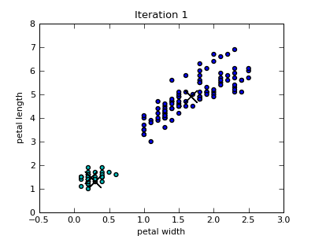
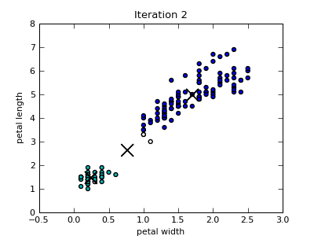

This is documentation for Orange 2.7. For the latest documentation, see Orange 3.
K-means clustering (kmeans)¶
- class Orange.clustering.kmeans.Clustering(data=None, centroids=3, maxiters=None, minscorechange=None, stopchanges=0, nstart=1, initialization=init_random, distance=Orange.distance.Euclidean, scoring=score_distance_to_centroids, inner_callback=None, outer_callback=None)¶
Implements a k-means clustering algorithm:
- Choose the number of clusters, k.
- Choose a set of k initial centroids.
- Assign each instances in the data set to the closest centroid.
- For each cluster, compute a new centroid as a center of clustered data instances.
- Repeat the previous two steps, until some convergence criterion is met (e.g., the cluster assignment has not changed).
The main advantages of this algorithm are simplicity and low memory requirements. The principal disadvantage is the dependence of results on the selection of initial set of centroids.
- k¶
Number of clusters.
- data¶
Instances to cluster.
- centroids¶
Current set of centroids.
- scoring¶
Current clustering score.
- iteration¶
Current clustering iteration.
- clusters¶
A list of cluster indexes. An i-th element provides an index to a centroid associated with i-th data instance from the input data set.
- __init__(data=None, centroids=3, maxiters=None, minscorechange=None, stopchanges=0, nstart=1, initialization=init_random, distance=Orange.distance.Euclidean, scoring=score_distance_to_centroids, inner_callback=None, outer_callback=None)¶
Parameters: - data (Table or None) – Data instances to be clustered. If not None, clustering will be executed immediately after initialization unless initialize_only=True.
- centroids (int or list of Instance) – either specify a number of clusters or provide a list of examples that will serve as clustering centroids.
- nstart (int) – If greater than one, nstart runs of the clustering algorithm will be executed, returning the clustering with the best (lowest) score.
- distance (DistanceConstructor) – an example distance constructor, which measures the distance between two instances.
- initialization – a function to select centroids given data instances, k and a example distance function. This module implements different approaches (init_random, init_diversity, init_hclustering).
- scoring – a function that takes clustering object and returns the clustering score. It could be used, for instance, in procedure that repeats the clustering nstart times, returning the clustering with the lowest score.
- inner_callback – invoked after every clustering iteration.
- outer_callback – invoked after every clustering restart (if nstart is greater than 1).
Stopping criteria:
Parameters: - maxiters (integer) – maximum number of clustering iterations
- minscorechange (float or None) – minimal improvement of the score from previous generation (if lower, the clustering will stop). If None, the score will not be computed between iterations
- stopchanges (integer) – if the number of instances changing the cluster is lower or equal to stopchanges, stop the clustering.
- __call__(data=None)¶
Runs the k-means clustering algorithm, with optional new data.
- compute_centeroid(data)¶
Return a centroid of the data set.
- compute_cluster()¶
calculate membership in clusters
- init_centroids()¶
Initialize cluster centroids
- run()¶
Runs clustering until the convergence conditions are met. If nstart is greater than one, nstart runs of the clustering algorithm will be executed, returning the clustering with the best (lowest) score.
- runone()¶
Runs a single clustering iteration, starting with re-computation of centroids, followed by computation of data membership (associating data instances to their nearest centroid).
Examples¶
The following code runs k-means clustering and prints out the cluster indexes for the last 10 data instances (kmeans-run.py):
import Orange
import random
random.seed(42)
iris = Orange.data.Table("iris")
km = Orange.clustering.kmeans.Clustering(iris, 3)
print km.clusters[-10:]
The output of this code is:
[1, 1, 2, 1, 1, 1, 2, 1, 1, 2]
Invoking a call-back function may be useful when tracing the progress of the clustering. Below is a code that uses an inner_callback to report on the number of instances that have changed the cluster and to report on the clustering score. For the score o be computed at each iteration we have to set minscorechange, but we can leave it at 0 or even set it to a negative value, which allows the score to deteriorate by some amount (kmeans-run-callback.py):
import Orange
import random
random.seed(42)
def callback(km):
print "Iteration: %d, changes: %d, score: %.4f" % (km.iteration, km.nchanges, km.score)
iris = Orange.data.Table("iris")
km = Orange.clustering.kmeans.Clustering(iris, 3, minscorechange=0, inner_callback=callback)
The convergence on Iris data set is fast:
Iteration: 1, changes: 150, score: 10.9555
Iteration: 2, changes: 12, score: 10.3867
Iteration: 3, changes: 2, score: 10.2034
Iteration: 4, changes: 2, score: 10.0699
Iteration: 5, changes: 2, score: 9.9542
Iteration: 6, changes: 1, score: 9.9168
Iteration: 7, changes: 2, score: 9.8624
Iteration: 8, changes: 0, score: 9.8624
Call-back above is used for reporting of the progress, but may as well call a function that plots a selection data projection with corresponding centroid at a given step of the clustering. This is exactly what we did with the following script (kmeans-trace.py):
import random
from matplotlib import pyplot as plt
import Orange
def plot_scatter(table, km, attx, atty, filename="kmeans-scatter", title=None):
#plot a data scatter plot with the position of centeroids
plt.rcParams.update({'font.size': 8, 'figure.figsize': [4,3]})
x = [float(d[attx]) for d in table]
y = [float(d[atty]) for d in table]
colors = ["c", "w", "b"]
cs = "".join([colors[c] for c in km.clusters])
plt.scatter(x, y, c=cs, s=10)
xc = [float(d[attx]) for d in km.centroids]
yc = [float(d[atty]) for d in km.centroids]
plt.scatter(xc, yc, marker="x", c="k", s=200)
plt.xlabel(attx)
plt.ylabel(atty)
if title:
plt.title(title)
plt.savefig("%s-%03d.png" % (filename, km.iteration))
plt.close()
def in_callback(km):
print "Iteration: %d, changes: %d, score: %8.6f" % (km.iteration, km.nchanges, km.score)
plot_scatter(table, km, "petal width", "petal length", title="Iteration %d" % km.iteration)
table = Orange.data.Table("iris")
random.seed(42)
km = Orange.clustering.kmeans.Clustering(table, 3, minscorechange=0, maxiters=10, inner_callback=in_callback)
Only the first four scatterplots are shown below. Colors of the data instances indicate the cluster membership. Notice that since the Iris data set includes four attributes, the closest centroid in a particular 2-dimensional projection is not necessary also the centroid of the cluster that the data point belongs to.
 k-Means Utility Functions¶
- static kmeans.init_random(data, k, _)¶
A function that can be used for initialization of k-means clustering returns k data instances from the data. This type of initialization is also known as Fory’s initialization (Forgy, 1965; He et al., 2004).
Parameters: - data (orange.ExampleTable) – data instances.
- k (integer) – the number of clusters.
- static kmeans.init_diversity(data, k, distfun)¶
A function that can be used for intialization of k-means clustering. Returns a set of centroids where the first one is a data point being the farthest away from the center of the data, and consequent centroids data points of which the minimal distance to the previous set of centroids is maximal. Differs from the initialization proposed by Katsavounidis et al. (1994) only in the selection of the first centroid (where they use a data instance with the highest norm).
Parameters: - data (orange.ExampleTable) – data instances.
- k (integer) – the number of clusters.
- distfun (Orange.distance.Distance) – a distance function.
- class Orange.clustering.kmeans.init_hclustering(n=100)¶
A class that returns an clustering initialization function that performs hierarhical clustering, uses it to infer k clusters, and computes a list of cluster-based data centers
- __call__(data, k, disfun)¶
Parameters: - data (orange.ExampleTable) – data instances.
- k (integer) – the number of clusters.
- distfun (Orange.distance.Distance) – a distance function.
- __init__(n=100)¶
Parameters: n (integer) – number of data instances to sample.
- static kmeans.plot_silhouette(km, filename=tmp.png, fast=False)¶
Saves a silhuette plot to filename, showing the distributions of silhouette scores in clusters. kmeans is a k-means clustering object. If fast is True use score_fast_silhouette to compute scores instead of score_silhouette.
Parameters: - km (KMeans) – a k-means clustering object.
- filename (string) – name of output plot.
- fast (boolean.) – if True use score_fast_silhouette() to compute scores instead of score_silhouette()
- static kmeans.score_distance_to_centroids(km)¶
Returns an average distance of data instances to their associated centroids.
Parameters: km (KMeans) – a k-means clustering object.
- static kmeans.score_silhouette(km, index=None)¶
Returns an average silhouette score of data instances.
Parameters: - km (KMeans) – a k-means clustering object.
- index (integer) – if given, the functon returns just the silhouette score of that particular data instance.
- static kmeans.score_fast_silhouette(km, index=None)¶
Same as score_silhouette, but computes an approximation and is faster.
Parameters: km (KMeans) – a k-means clustering object.
Typically, the choice of seeds has a large impact on the k-means clustering, with better initialization methods yielding a clustering that converges faster and finds more optimal centroids. The following code compares three different initialization methods (random, diversity-based and hierarchical clustering-based) in terms of how fast they converge (kmeans-cmp-init.py):
import random
import Orange
data_names = ["iris", "housing", "vehicle"]
data_sets = [Orange.data.Table(name) for name in data_names]
print "%10s %3s %3s %3s" % ("", "Rnd", "Div", "HC")
for data, name in zip(data_sets, data_names):
random.seed(42)
km_random = Orange.clustering.kmeans.Clustering(data, centroids = 3)
km_diversity = Orange.clustering.kmeans.Clustering(data, centroids = 3,
initialization=Orange.clustering.kmeans.init_diversity)
km_hc = Orange.clustering.kmeans.Clustering(data, centroids = 3,
initialization=Orange.clustering.kmeans.init_hclustering(n=100))
print "%10s %3d %3d %3d" % (name, km_random.iteration, km_diversity.iteration, km_hc.iteration)
As expected, k-means converges faster with diversity and clustering-based initialization that with random seed selection:
Rnd Div HC
iris 12 3 4
housing 14 6 4
vehicle 11 4 3
The following code computes the silhouette score for k=2..7 and plots a silhuette plot for k=3 (kmeans-silhouette.py):
import Orange
voting = Orange.data.Table("voting")
# table = Orange.data.Table("iris")
for k in range(2, 8):
km = Orange.clustering.kmeans.Clustering(voting, k, initialization=Orange.clustering.kmeans.init_diversity)
score = Orange.clustering.kmeans.score_silhouette(km)
print k, score
km = Orange.clustering.kmeans.Clustering(voting, 3, initialization=Orange.clustering.kmeans.init_diversity)
Orange.clustering.kmeans.plot_silhouette(km, "kmeans-silhouette.png")
The analysis suggests that k=2 is preferred as it yields the maximal silhouette coefficient:
2 0.629467553352
3 0.504318855054
4 0.407259377854
5 0.358628975081
6 0.353228492088
7 0.366357876944
Silhouette plot for k=3.